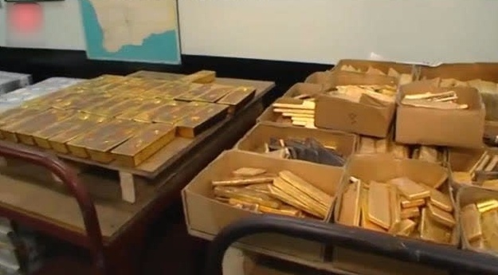

回复@十步侠:有。月底打算建个新品种。希望这个月它别动。//@十步侠:e大，最近市场感觉很沉闷，没啥可交易的品种。@ETF拯救世界:市场在每个阶段，表现好的品种是不同的。是有周期的。比如医药消费与资源与科技股等等就会在不同的周期中表现出色。有时候某些行业不动不是它不行，而是它的季节还没到。你见过夏天开的梅花吗。
回复@瑞芝如海:我觉得可能不是适合所有人看，说投资的部分不多。我看完再总结吧~//@瑞芝如海:老大，我也买了，今天下午到货@ETF拯救世界:我的目标只是让自己正确 —— 我并不关心正确的答案是不是来源于我。所以我学会了让自己保持极度开明的心态，允许其他人指出我可能疏忽的东西。《原则》
为什么我觉得开采黄金要比挖虚拟货币难不少@网易财经:#网易财经#学到就是赚到[嘿嘿嘿]实拍黄金生产全过程，没想到是这样制造出来的，还是第一次见。X5技工的秒拍视频（上#秒拍#看我的最新短视频，下载秒拍->网页链接）  2万次播放 03:35